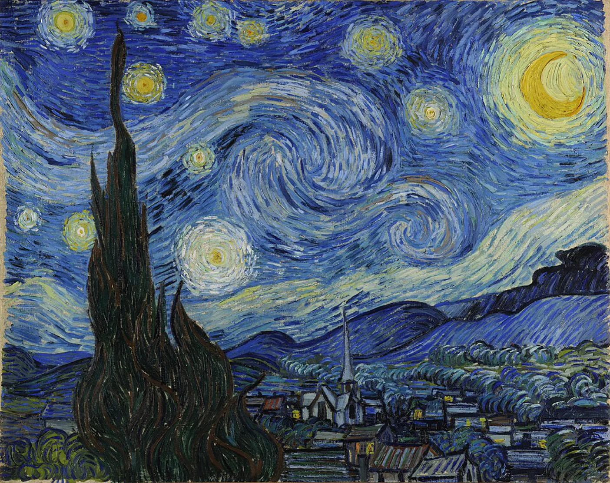
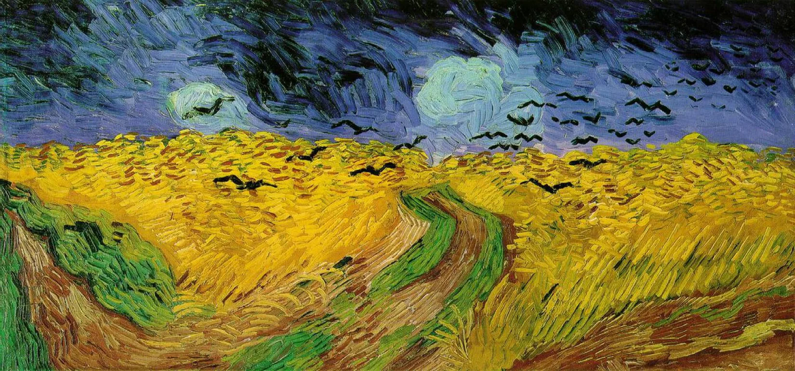
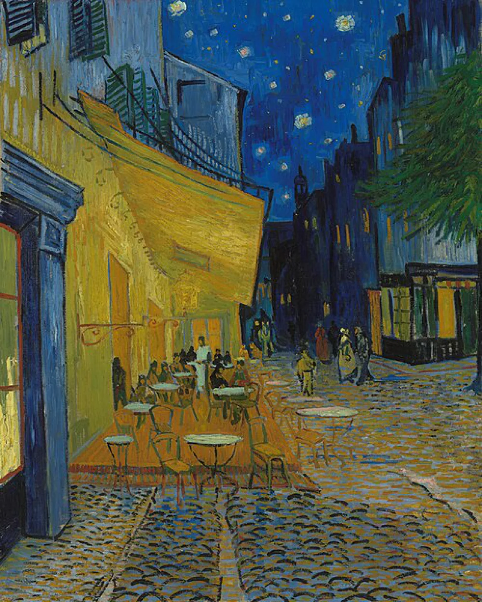

«Звездная ночь» 1889
Космический вихрь, написанный из окна палаты психиатрической клиники.
Это не пейзаж — это визуализация того, как Ван Гог ощущал вечность. Написанная в лечебнице Сен-Реми, картина не имеет ничего общего с реальным ночным небом Прованса. Гениальность здесь кроется в ритме и фактуре. Взгляните на небо: оно закручено в гигантские спирали, напоминающие турбулентные потоки жидкости.
Ван Гог выдавливал краску на холст так густо, что звезды и полумесяц буквально выступают над поверхностью картины, превращаясь в сгустки чистого желтого света, плывущие в бушующем ультрамариновом океане. А на переднем плане, словно черный язык пламени, врезается в небо темный кипарис — древний символ смерти, который тянется к звездам, связывая земную юдоль скорби с бесконечным космосом.

«Пшеничное поле с воронами» 1890
Прощальная симфония художника, балансирующая между восторгом и бездной.
Часто (и не совсем верно) эту картину называют последней работой Ван Гога. Написанная за несколько недель до самоубийства, она является абсолютным триумфом техники импасто (густого наложения краски мастихином и кистью). Композиция картины вызывает физическое чувство удушья. Ван Гог делит холст на три части: бушующее небо цвета индиго, залитое солнцем золотисто-желтое поле и три черные, расходящиеся в разные стороны тропы.
Динамика задается мазками: небо и поле написаны длинными, агрессивными, волнообразными движениями, создающими эффект надвигающегося шторма. А над этим золотым морем нависают черные вороны, летящие прямо на зрителя. Это редчайший пример того, как чистый, радостный желтый цвет, так любимый Ван Гогом, здесь звучит не как гимн жизни, а как предвестие неизбежного конца.

«Ночное кафе» (1888)
Полотно, где цвет становится инструментом психологического насилия.
Ван Гог писал эту картину по памяти, запершись в кафе на три ночи подряд, спя только днем. Он сам охарактеризовал свою задачу в письме брату: выразить «страсть человечества» через контраст нежно-розового и кроваво-красного на фоне ядовито-зеленого.
Здесь поражает жестокость колористики. Ван Гог берет два дополнительных цвета — кислотно-зеленый (стены и бильярдный стол) и огненно-красный (пол и мебель) — и сталкивает их лоб в лоб. При длительном взгляде эти цвета начинают физически вибрировать, вызывая у зрителя чувство тревоги и дезориентации. Резкие, как бритва, диагональные линии пола и светящиеся, как расплавленная лава, лампы превращают обычную кофейню в адскую топку, в которой люди не отдыхают, а медленно сходят с ума от одиночества.